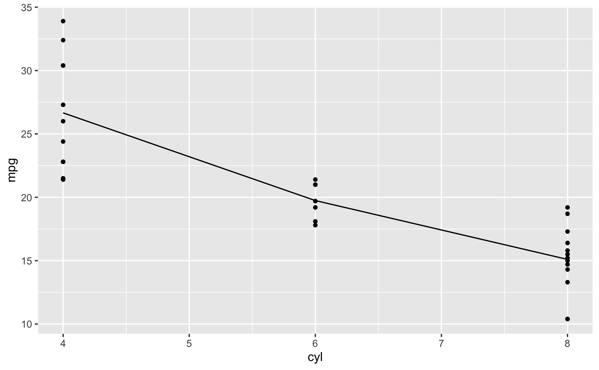
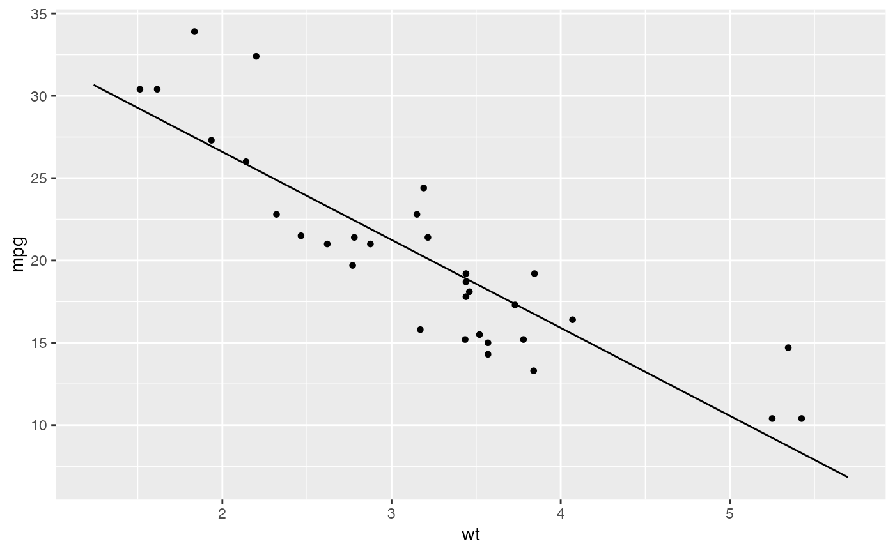

Visualize a regression model amid the data that generated it.
plotModel(mod, ...)
Arguments
| mod | |
|---|---|
| ... | arguments passed to |
Value
A lattice or ggplot2 graphics object.
Details
The goal of this function is to assist with visualization of statistical models. Namely, to plot the model on top of the data from which the model was fit.
The primary plot type is a scatter plot. The x-axis can be assigned to one of the predictors in the model. Additional predictors are thought of as co-variates. The data and fitted curves are partitioned by these covariates. When the number of components to this partition is large, a random subset of the fitted curves is displayed to avoid visual clutter.
If the model was fit on one quantitative variable (e.g. SLR), then a scatter plot is drawn, and the model is realized as parallel or non-parallel lines, depending on whether interaction terms are present.
Eventually we hope to support 3-d visualizations of models with 2 quantitative
predictors using the rgl package.
Currently, only linear regression models and generalized linear regression models are supported.
Caution
This is still underdevelopment. The API is subject to change, and some use cases may not work yet. Watch for improvements in subsequent versions of the package.
See also
Examples
if (FALSE) { # multiple categorical vars mod <- lm( mpg ~ wt + factor(cyl) + factor(vs) + factor(am), data = mtcars) plotModel(mod) plotModel(mod, mpg ~ am) # interaction mod <- lm( mpg ~ wt + factor(cyl) + wt:factor(cyl), data = mtcars) plotModel(mod) # polynomial terms mod <- lm( mpg ~ wt + I(wt^2), data = mtcars) plotModel(mod) # GLM mod <- glm(vs ~ wt, data=mtcars, family = 'binomial') plotModel(mod) # GLM with interaction mod <- glm(vs ~ wt + factor(cyl), data=mtcars, family = 'binomial') plotModel(mod) # 3D model mod <- lm( mpg ~ wt + hp, data = mtcars) plotModel(mod) # parallel planes mod <- lm( mpg ~ wt + hp + factor(cyl) + factor(vs), data = mtcars) plotModel(mod) # interaction planes mod <- lm( mpg ~ wt + hp + wt * factor(cyl), data = mtcars) plotModel(mod) plotModel(mod, system="g") + facet_wrap( ~ cyl ) }